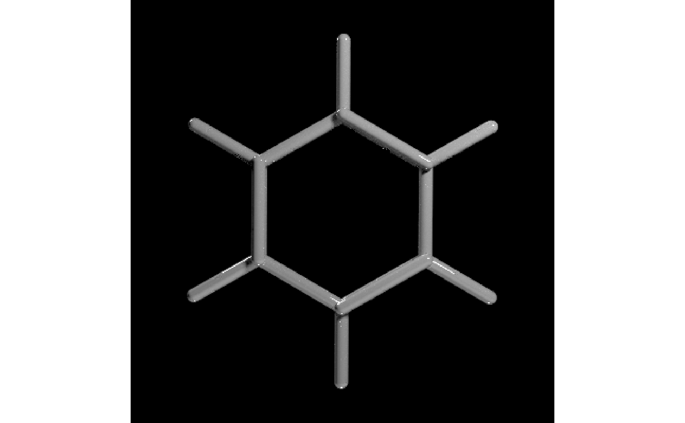
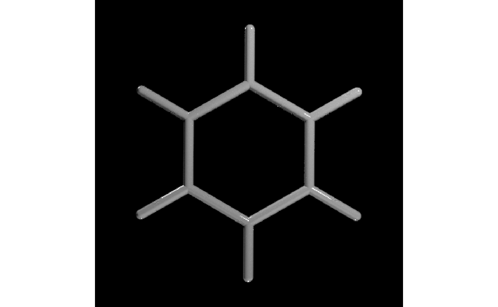
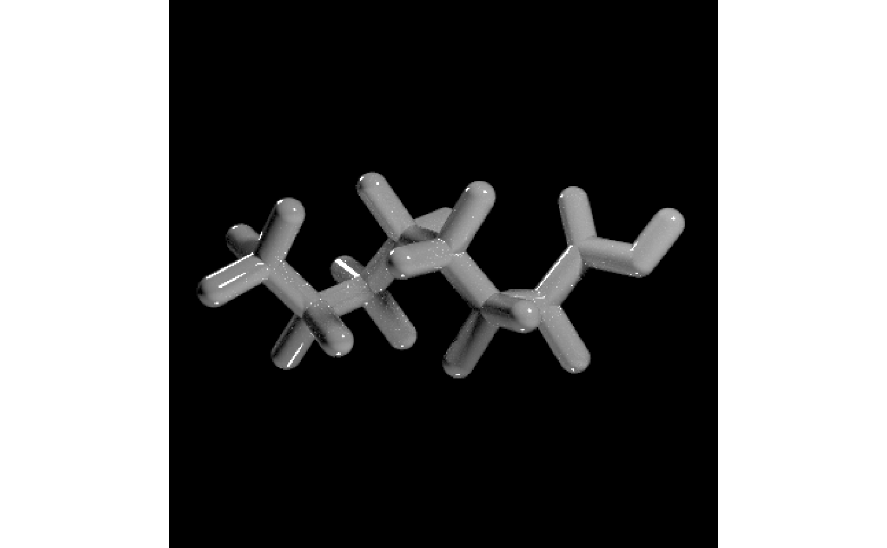

Reads an SDF file and extracts the 3D molecule model
generate_bond_scene(
model,
x = 0,
y = 0,
z = 0,
scale = 1,
center = TRUE,
force_single_bonds = FALSE,
pathtrace = TRUE,
material = rayrender::glossy,
material_vertex = material_list(diffuse = "grey33", ambient = "grey33", type = "phong",
ambient_intensity = 0.3)
)Model extracted from a PDB or SDF file.
Default `0`. X offset, applied after centering.
Default `0`. Y offset, applied after centering.
Default `0`. Z offset, applied after centering.
Default `1`. Amount to scale the interatom spacing.
Default `TRUE`. Centers the bounding box of the model.
Default `FALSE`. Whether to force all bonds to show as a single connection.
Default `TRUE`. If `FALSE`, the `rayvertex` package will be used to render the scene.
Default `rayrender::glossy`. Rayrender material to use when `pathtrace = TRUE`. Must be either `glossy`, `diffuse`, or `dielectric`.
Default `material_list(diffuse="grey33",ambient="grey33",type="phong", ambient_intensity=0.3)`. Material to use for the bonds when `pathtrace = FALSE`.
Rayrender/rayvertex scene containing only the connections between atoms in a molecule/protein.
#Generate a scene with benzene molecule with just the atoms
# \donttest{
get_example_molecule("benzene") %>%
read_sdf() %>%
generate_bond_scene() %>%
render_model(lights = "both", samples=256,sample_method="sobol_blue")

#Force single bonds to just show the shape of the molecule
get_example_molecule("benzene") %>%
read_sdf() %>%
generate_bond_scene(force_single_bonds = TRUE) %>%
render_model(lights = "both", samples=256,sample_method="sobol_blue")

#Generate a scene with PFOA, reducing the inter-atom spacing
get_example_molecule("pfoa") %>%
read_sdf() %>%
generate_bond_scene(scale=0.3,force_single_bonds = TRUE) %>%
render_model(lights = "both", samples=256,sample_method="sobol_blue")

# }